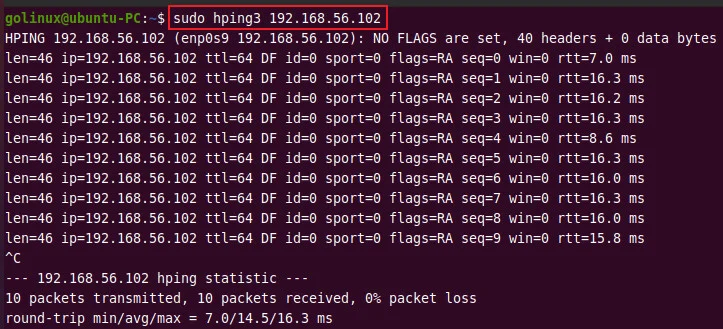
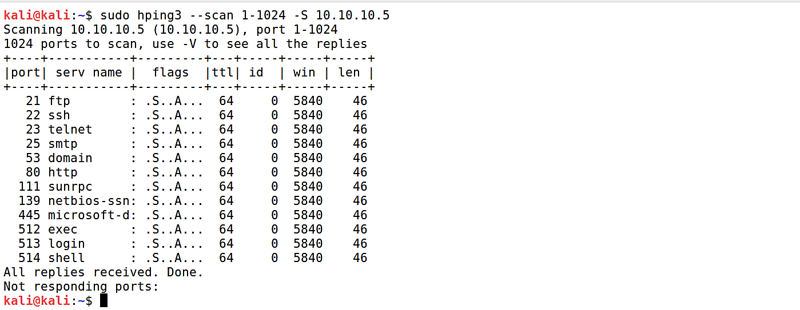
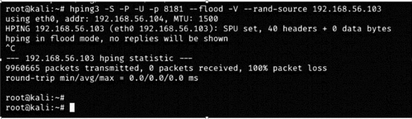

Simule des attaques et analyse la sécurité du réseau
Hping3 est un outil réseau open-source permettant de créer des paquets TCP/IP personnalisés. Il est principalement utilisé pour tester les firewalls et les IDS/IPS, effectuer des scans de ports, ou encore simuler des attaques réseau telles que des DDoS ou des scans SYN.
Cette commande permet d'installer Hping3 sur un système Debian/Kali Linux.
Envoie des paquets SYN sur le port 80 de l'hôte 192.168.1.1 pour tester la réactivité du service.
Envoie des paquets SYN sur les ports 80 (HTTP), 443 (HTTPS) et 22 (SSH).
--flood génère une attaque de type DDoS en envoyant rapidement des paquets SYN à l'hôte cible.
Effectue un scan de tous les ports (de 1 à 1024) pour identifier les ports ouverts sur l'hôte cible.
-1 envoie un paquet ICMP pour tester la réactivité du réseau à un ping personnalisé.
Exemples de résultats obtenus avec Hping3 :
  --flood, Hping3 est également utilisé pour tester la résistance aux attaques DDoS.